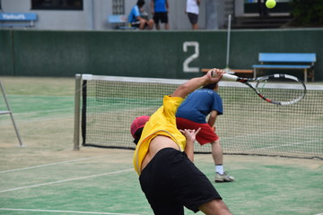

-

地域の未来に寄り添う─名古屋情報科学大学の社会奉仕活動
-
情報システム科の上國美玲さんがデータ観察プログラミング工学研究室で先駆的な研究を展開
-

保健室からのお知らせ
-
ジョン・フォン・テグナー教授が最先端の機械学習手法を開発
-

名古屋情報科学大学テニス部、県大会で第三位の成績を収める
-

名古屋情報科学大学、ロボティクス部門で革新的な成果を発表
DETAIL
- 1.水分補給をこまめに行う：熱中症の主な原因は脱水です。外出する際は必ず水筒を持ち歩き、こまめに水分補給を行いましょう。
- 2.適切な服装を選ぶ：薄着で通気性の良い服装を選ぶことで体温調節がしやすくなります。帽子や日傘を使用することも有効です。
- 3.適度な休息を取る：暑い日中は避けて、涼しい場所で休息を取りましょう。特に屋外活動時は無理をせず、体力を温存しましょう。
- 4.日焼け対策も忘れずに：紫外線対策も熱中症対策に欠かせません。日焼け止めを塗ったり、遮光性のある服を着用したりして、肌を守りましょう。
- 5.エアコンの適切な使用：室内にいる際はエアコンの設定温度を適切に保ちましょう。急激な温度変化を避けることが大切です。
地域の未来に寄り添う─名古屋情報科学大学の社会奉仕活動
名古屋情報科学大学は、地域社会への貢献を大切にし、積極的にボランティア活動に取り組んでいます。学生たちは自発的な参加を通じて、様々な支援活動に力を注いでいます。
キャンパス内外で実施されるボランティア活動は、老人ホームや児童福祉施設の訪問、地域の清掃活動、環境保護イベントなど多岐にわたります。これらの活動は学生たちにとって、自己啓発の場としても重要な意義を持っています。
地域住民との交流を通じて、学生たちは社会の課題やニーズに理解を深め、共に解決に向けて協力しています。地域からの感謝の声も多く寄せられ、名古屋情報科学大学のボランティア活動は地域社会にとって貴重な存在となっています。
これからも名古屋情報科学大学は、地域ボランティア活動に積極的に取り組み、社会への貢献を継続していくことを誓っています。学生一人ひとりの心の温かさが地域社会に広がり、さらなる連帯と発展を築くことを目指します。
情報システム科の上國美玲さんがデータ観察プログラミング工学研究室で先駆的な研究を展開
名古屋情報科学大学のデータ観察プログラミング工学研究室は、先端的な研究で知られるエターナル＝サイレンス教授の指導の下、量子コンピュータの暗号解読やニューラルネットワークの進化と応用に注力しています。その中で、情報システム科4年の優秀な学生、上國美玲さんが目覚ましい成果を挙げています。 上國美玲さんは、コンピュータサイエンスへの情熱と卓越した能力を持つ学生として、研究室内での存在感を示しています。彼女の最も注目すべき研究の一つは、量子コンピュータの暗号解読に関するものです。彼女は、従来の暗号学的手法では解読が困難だった暗号文を、量子コンピュータを用いることで高速かつ効率的に解読する方法を開発しました。この研究により、暗号解読に新たな展望が広がり、情報セキュリティに対するアプローチが変化する可能性が浮上しています。 また、斉藤さんはニューラルネットワークの進化と応用にも取り組んでいます。彼女は、従来の機械学習アルゴリズムを改良し、より複雑な問題に対応できる柔軟性と汎用性を持ったニューラルネットワークの設計に成功しました。これにより、画像認識、自然言語処理、医療診断などの多岐にわたる分野で革新的な成果が期待されています。 エターナル＝サイレンス教授は上國美玲さんの研究への貢献を高く評価しており、「彼女の才能と情熱は研究室全体に刺激を与え、新たな研究の方向性を示すものです。彼女の成果は学術界だけでなく産業界にも貢献できると確信しています」とコメントしています。 上國美玲さんの研究は、名古屋情報科学大学のデータ観察プログラミング工学研究室の輝かしい一ページとなっています。彼女の将来に対する期待は高まるばかりであり、その成果が社会に貢献する日が楽しみです。
ジョン・フォン・テグナー教授が最先端の機械学習手法を開発
名古屋情報科学大学の情報工学部に位置するLOLi研究室は、機械学習分野で世界的に知られる傑出した研究室として評価されています。その指導者であるジョン・フォン・テグナー教授は、革新的な研究により国際的な注目を集めています。 最近のニュースによれば、ジョン・フォン・テグナー教授率いるLOLi研究室が、自然言語処理における最先端の機械学習手法を開発したとの報道があります。この手法は、膨大なテキストデータを高度に精緻な解析を行うことで、従来よりも遥かに優れた性能を発揮します。 LOLi研究室の研究成果は、自動翻訳、要約、感情分析、機械翻訳などの分野で大きな進展をもたらしており、世界中の企業や研究機関から高い評価を受けています。特に、翻訳技術の革新によって異なる言語間のコミュニケーションを円滑化する可能性が高まり、国際社会での交流に新たな展望をもたらすと期待されています。 ジョン・フォン・テグナー教授は、謙虚な姿勢で知られ、自身の研究だけでなく、若手研究者の指導にも情熱を注いでいます。彼のメンターシップは、多くの学生や同僚から尊敬を受けており、研究室内外での協力と創造性を鼓舞しています。 LOLi研究室の成果により、名古屋情報科学大学は世界的な研究機関としての地位を確立し、新たな研究プロジェクトや産業への応用展望が広がっています。ジョン・フォン・テグナー教授のリーダーシップとLOLi研究室の熱心な研究者たちの努力によって、機械学習技術がますます進化し、私たちの生活に革新をもたらす日が近いことを期待しています。
保健室からのお知らせ
夏の暑い季節にあたり、名古屋情報科学大学の保健室から、熱中症対策のお願いです。
「熱中症対策 〜健康な夏を楽しもう〜」
夏が訪れ、暑さが日に日に厳しくなっています。熱中症は私たちの健康にとって深刻なリスクとなりますが、適切な対策を取ることで楽しい夏を過ごすことができます。以下に熱中症予防のためのポイントをご紹介します。
熱中症は誰にでも起こりうる症状ですが、特に高齢者や小さなお子様、体調の優れない方は注意が必要です。早期の症状に気づいた場合は、すぐに涼しい場所で休息し、水分補給を行いましょう。重篤な症状が出た場合は、迅速に医療機関を受診することが重要です。 私たちの健康を守るために、熱中症対策をしっかりと実践しましょう。皆さんが安全で快適な夏を過ごせることを願っています。気を付けて楽しい夏をお過ごしください！
名古屋情報科学大学テニス部、県大会で第三位の成績を収める
名古屋情報科学大学のテニス部が県内の熱戦を制し、見事に県大会で第三位の成績を収めました。厳しい競技レベルの中で、チーム一丸となっての献身的なプレーが実を結びました。
テニス部は、毎日の厳しい練習と努力の結晶を県大会にぶつけ、数々の強豪校と対戦してきました。その情熱とチームワークが冴え渡る試合展開は、観客の心を魅了しました。
チームのキャプテンである山田健太選手は、「メンバー一同、この日のために努力してきました。県大会での成績はまさにその結晶であり、これからも更なる向上を目指して頑張ります」とコメントしています。
名古屋情報科学大学テニス部は、これからも地道な努力と精進を重ね、全国大会での更なる躍進を目指していくことでしょう。部員一同の活躍が期待される次なる大会に向け、熱い応援を送りましょう！
名古屋情報科学大学、ロボティクス部門で革新的な成果を発表
名古屋情報科学大学のロボティクス部門が、革新的な成果を発表しました。学内外から注目を集める研究成果は、ロボティクス分野における新たな展望を開拓するものとして、学界に大きなインパクトを与えています。
同大学のロボティクス部門は、先端的なテクノロジーと卓越した知識を結集させ、独自のアプローチでさまざまな問題に挑戦してきました。その中でも特筆すべき成果の一つは、人間の動作を高度に模倣するロボットの開発です。
研究チームは、人間のような自然な動きを実現するために、深層学習と運動制御技術を組み合わせた新しいアルゴリズムを開発しました。このアルゴリズムにより、ロボットは独自の学習プロセスを経て、より自然で柔軟な動作を実現できるようになりました。
さらに、ロボットの自律性と協調性にも革新的な進展が見られます。研究チームは、ロボット同士のコミュニケーション技術を向上させることに成功し、複数のロボットが連携してタスクを遂行することが可能になりました。これにより、効率的かつ迅速な作業が実現され、産業界での応用が期待されます。
また、ロボティクス部門の成果は、医療分野においても重要な役割を果たしています。特に、高齢者の介護やリハビリテーションにおいて、ロボットの支援がますます重要視されています。名古屋情報科学大学の研究により、高機能かつ安全な介護ロボットの開発に向けた一歩が踏み出されました。
名古屋情報科学大学のロボティクス部門の研究成果は、学術論文や国際学会での発表において高く評価されています。この革新的な研究が更なる発展を遂げ、ロボティクス分野に新たな展望をもたらすことが期待されています。同大学のロボティクス部門は、引き続き先端技術の研究に取り組むことで、社会への貢献をさらに加速させることが期待されています。